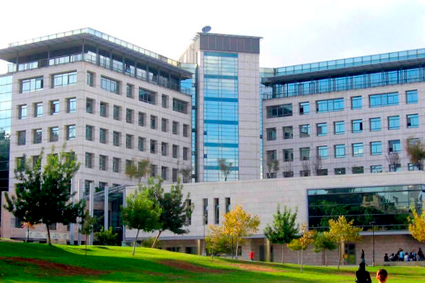
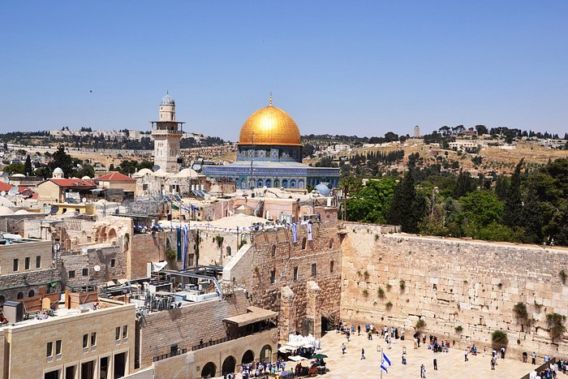

Israel has one of the most technologically advanced and highest-quality healthcare systems in the world. Hospitals in Israel are equipped with modern facilities and high-quality medical technology. Medical personnel are very well-trained.
Healthcare in Israel is also delivered very efficiently. A 2013 found Israel to have the fourth most efficient healthcare system in the world. In an August 2014 survey, Israel was ranked as having the seventh-most efficient healthcare system in the world.
Seven Israeli hospitals have received accreditation from the Joint Commission, an organization that sets safety standards for medical care: Soroka Medical Center in Beersheba, HaEmek Medical Center in Afula, Meir Hospital in Kfar Saba, Rabin Medical Center in Petah Tikva, Kaplan Medical Center in Rehovot, Carmel Medical Center in Haifa and Assuta Medical Center in Tel Aviv.
In 2019 and 2020, Newsweek magazine included Israel's largest hospital, Sheba Medical Center at Tel HaShomer in its list of the ten best hospitals in the world.
 According to the Webometrics ranking, six of Israel's universities place in the top 100 schools of Asia.Four universities place in the top 150 in the world according to the Shanghai Jiao Tong University Academic Ranking of World Universities, and three are in the Times Higher Education-QS World University Rankings (i.e. amongst the "Top 200 World Universities"). Of note, the prestigious NYU, which enrolls the largest number of Jewish students of any public or private university in the United States,and is ranked in the top 34 globally in all major publications of university rankings, has a campus in Tel Aviv.
In addition, Israeli universities are among 100 of the top world universities in science and engineering-related subjects, according to the QS World University Rankings: mathematics (TAU, Hebrew University and Technion); physics (TAU, Hebrew University and Weizmann Institute of Science); chemistry (TAU, Hebrew University and Technion); computer science (TAU, Hebrew University, Weizmann Institute of Science, BIU and Technion);engineering (Technion);life sciences (Hebrew University).
In the social sciences, TAU and the Hebrew University rank in the top 100, and these universities are also ranked in the top 100 for economics; Israel is ranked 23rd on RePEc's Country and State Ranking for economics.
In 2010, Hebrew University reached 57th place in the global ranking list published by Shanghai Jiao Tong University in China.
 Tourism in Israel is one of Israel's major sources of income, with a record 4.55 million tourist arrivals in 2019, and, in 2017, contributed NIS 20 billion to the Israeli economy making it an all-time record.Israel offers a plethora of historical and religious sites, beach resorts, natural sites, archaeological tourism, heritage tourism, adventure tourism, and ecotourism. Israel has the highest number of museums per capita in the world.[6] For practical reasons, this article also covers tourism in the Israeli-occupied West Bank and the occupied Golan Heights, since it is closely interconnected with the mass tourism in Israel.
In 2017, the most popular paid tourist attraction is Masada. The most visited city was Jerusalem and the most visited site was the Western Wall. The largest percentage of tourists came from the United States accounting for 19% of all tourists, followed by Russia, France, Germany, the United Kingdom, China, Italy, Poland, and Canada.
Religious tourism is very popular in Israel and in the West Bank. As of 2007, the two most visited Jewish religious sites were the Western Wall and the grave of Rabbi Shimon bar Yochai;[8] The most visited Christian holy sites are the Church of the Holy Sepulchre in Jerusalem, the Church of the Nativity in the West Bank town of Bethlehem, and the Basilica of the Annunciation in Nazareth, Israel. The most visited Islamic religious places are the Masjid Al-Aqsa (the Temple Mount) in Jerusalem, and the Ibrahimi Mosque at the Tomb of the Patriarchs in the West Bank town of Hebron.